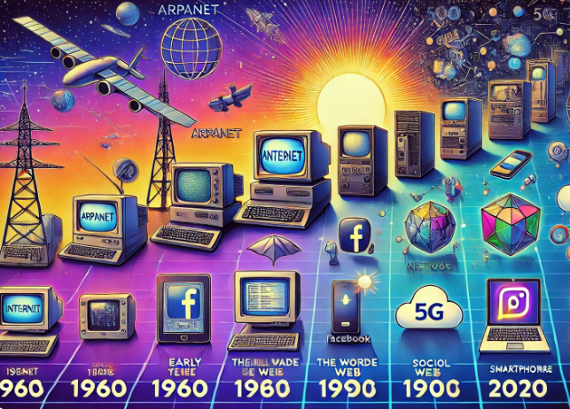

¿QUE ES EL INTERNET?
Es un conjunto descentralizado de redes de comunicación interconectados que utilizan la familia
de protocolos TCP/IP, garantizando que las redes físicas heterogéneas que la componen funcionen
como una red lógica única, de alcance mundial. Sus orígenes remontan a 1969, cuando se
estableció la primera conexión de computadoras conocida como ARPANET, entre tres
Universidades en California y otra en Utah, Estados Unidos.
También se puede definir como un conjunto de ordenadores interconectados globalmente, a
través de los que todo el mundo puede acceder rápidamente a datos y programas desde cualquier
sitio. Es a la vez una herramienta de emisión mundial, un mecanismo para diseminar información y
un medio para la colaboración y la interacción entre personas y sus ordenadores, sin tener en
cuenta su ubicación geográfica. Internet representa uno de los ejemplos más exitosos de los
beneficios de una inversión y un compromiso continuos en el campo de la investigación y el
desarrollo de la infraestructura de la información. Desde las primeras investigaciones en
conmutación de paquetes, el Gobierno, la Industria y la Academia se han asociado como artífices
de la evolución e implementación de esta apasionante nueva tecnología.
HISTORIA
Internet se inició en torno al año 1969, cuando el Departamento de Defensa de los EE.UU
desarrolló ARPANET, una red de ordenadores creada durante la Guerra Fría cuyo objetivo era
eliminar la dependencia de un Ordenador Central, y así hacer mucho menos vulnerables las
comunicaciones militares norteamericanas. Específicamente el día 7 de abril de 1969, se recuerda
como el nacimiento de Internet. En octubre del mismo año se envió un mensaje de una computador a otro: Charly
Kline, un estudiante de laUCLA, tecleó un mensaje que decía “login”, lo cual tenía que viajar unos
500 km de distancia para que llegase al receptor. Fue en ese momento cuando el profesor Leonard
Kleinrock de la Universidad de Stanford, recibió el mensaje, aunque solo llegaron las vocales “O” e
“I”.
Tanto el protocolo de Internet como el de Control de Transmisión fueron desarrollados a partir de
1973, también por el departamento de Defensa norteamericano. Cuando en los años 1980 la red
dejó de tener interés militar, pasó a otras agencias que ven en ella interés científico. En Europa las
redes aparecieron en los años 1980, vinculadas siempre a entornos académicos, universitarios. En
1989 se desarrolló el World Wide Web (www) para el Consejo Europeo de Investigación Nuclear.
En España no fue hasta 1985 cuando el Ministerio de Educación y Ciencia elaboró el proyecto IRIS
para conectar entre sí todas las universidades españolas.

Conexiones
Linea telefónica
Es el método de conexión más antiguo y era el único utilizado
cuando internet daba sus primeros pasos. El acceso es realizado por el usuario mediante un
módem y una línea telefónica convencional. Este tipo de conexión es cada vez menos usada, ya
que la capacidad de transmisión de datos no supera los 56 kbps, lo que hace que la navegación sea
muy lenta. Con la popularización de los servicios de acceso de banda ancha y sus precios muy
accesibles, el acceso está prácticamente en extinción.